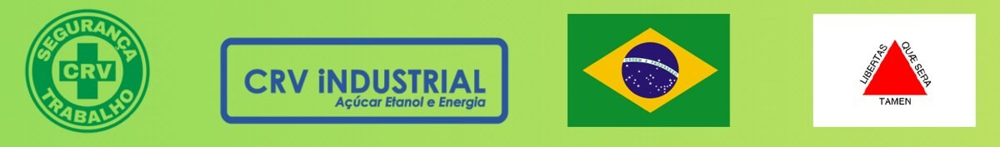

Deixe esta tela aberta enquanto as pessoas entram. A sequência de "carregamento" roda sozinha. Quando todos estiverem sentados, avance com → (ou com o passador de slides).
Atalhos: → ou espaço avança · ← volta · F tela cheia · N notas do apresentador. O relógio da barra inferior começa a contar quando você sai desta tela.

Abertura · 1 min. Boa tarde, apresentação rápida: nome, função, há quanto tempo na CRV. Diga que essa hora vai ser diferente: pouca palestra, muita decisão de vocês.
Postura: você não está indo "ensinar segurança". Você é um líder que também tem responsabilidade sobre o assunto e está disposto a assumi-la.
2 min. "Quero começar nossa conversa fazendo uma pergunta simples. Quando vocês saem de casa para trabalhar, o que esperam encontrar quando voltarem?"
(pausa: deixe a pergunta no ar) → avance os itens um a um: "Provavelmente a família, os filhos, a esposa, o marido, os pais… pessoas que esperam por vocês."
Feche: "Por trás de cada trabalhador existe uma vida que não pode ser colocada em risco."
Nenhuma tonelada de cana. Nenhuma máquina trabalhando. Nenhum resultado.
1 min. "Será que existe alguma meta de produção, alguma tonelada de cana, alguma máquina trabalhando ou algum resultado que seja mais importante do que garantir que cada um de vocês volte para casa em segurança?"
(pausa longa, 3 a 4 segundos) → "Nenhuma tonelada de cana. Nenhuma máquina. Nenhum resultado."
1 min. Diga a primeira frase, faça uma pausa e → revele a segunda.
"A empresa precisa produzir, colher e alimentar a indústria. Mas nenhuma meta justifica colocar uma vida em risco. Produzir é importante. Voltar para casa é inegociável." Essa frase vai voltar no final.
2 min. Teste o combinado com uma pergunta leve: "Quem aqui já trabalhou uma safra inteira? Levanta a mão." Isso aquece a plateia para as votações do bloco 2.
O que os números do Brasil dizem sobre o trabalho.
Sete situações, das 6h às 18h. Você escolhe.
Como uma atitude muda uma equipe. E o que é dever de quem lidera.
Uma história para levar para casa.
1 min. Só apresente o caminho. Não explique os blocos.
Antes de falar da gente, vamos olhar para o país.
Bloco 1 · 8 min no total.
acidentes de trabalho notificados no Brasil.
em 00:00 de apresentação · cerca de 1,4 por minuto
Estimativa pela média de 8,8 milhões de notificações entre 2012 e 2024 (MPT / Observatório SmartLab). O número cresce ao vivo.
2 min. Deixe o número subir em silêncio por alguns segundos. Depois explique: é a média do Brasil, cerca de 8,8 milhões de acidentes notificados em 12 anos, o que dá perto de 1,4 por minuto.
Pergunta para a plateia: "Quantos desses vocês acham que a pessoa achou que nunca ia acontecer com ela?"
Dica: no final, volte a este slide (tecla Home e depois → até aqui) para mostrar quanto o número andou durante a tarde.
mortes por acidente de trabalho.
Fonte: MPT / Observatório de Segurança e Saúde no Trabalho (SmartLab), Abril Verde 2025. Dados parciais, sujeitos a subnotificação.
2 min. Fale devagar no segundo ponto e faça uma pausa. Ligue com a abertura: "É uma família que esperava alguém voltar para casa."
dos acidentes de trabalho no Brasil envolvem máquinas e equipamentos. É o principal agente causador.
Acidentes com máquinas causam lesões gravíssimas com frequência 15 vezes maior do que as outras causas.
dos afastamentos por acidente são por fratura, com punho e mão na frente.
amputações em 2024. Cerca de 12 por dia.
Fonte: MPT / Observatório SmartLab, dados 2012–2024.
2 min. Ligue com a nossa realidade: colhedora, trator, caminhão, oficina. "Nós trabalhamos cercados do principal agente causador do país."
No último cartão, peça para todos olharem para as próprias mãos por um segundo.
lesão grave ou incapacitante
lesões leves
acidentes com dano a equipamento
quase-acidentes: ninguém se machucou, nada quebrou
O acidente começa antes do acidente. A base é onde a gente trabalha, e é ali que se evita o topo.
2 min. Monte de cima para baixo. No 600, pergunte: "Quem aqui já passou por um susto que ninguém ficou sabendo?" Deixe levantarem a mão.
Fecho: "O acidente pode acontecer em segundos, mas quase sempre começa muito antes: num sinal que ninguém comunicou, num desvio, numa pequena decisão. Cada quase-acidente que alguém conta é uma chance de impedir o 1 lá de cima."
Sete situações entre 6h e 18h. Em cada uma, levante a mão na opção que você faria de verdade.
Bloco 2 · 24 min, cerca de 3 min por situação. Ritmo de cada uma: leia a situação → mostre as opções (→) → peça mãos para A, depois para B → pergunte a alguém por que escolheu → revele (→).
✋ Levante a mão: A ou B?
Perto e devagar também capota. O cinto não sabe se a viagem é curta.
Pergunte quem já andou sem cinto "só um pedacinho" dentro da fazenda.
✋ Levante a mão: A ou B?
O checklist não é sobre ontem. É sobre o que mudou desde a última vez que alguém olhou.
Aqui a resposta sincera costuma ser B. Agradeça a sinceridade de quem levantar a mão.
✋ Levante a mão: A ou B?
Desligado não é bloqueado. A chave no seu bolso é a garantia de que ninguém liga.
Peça para alguém da oficina contar como é o bloqueio e a etiquetagem na prática.
✋ Levante a mão: A ou B?
Parar antes é uma atitude responsável. Uma máquina pode parar e voltar a trabalhar.
E na prática: todos nós temos liberdade e segurança para tomar essa decisão?
4 min · a situação mais importante do bloco. É a pressão por resultado. Depois de revelar, → faça a pergunta aberta e ouça sem julgar: "Será que, na prática, todos nós temos liberdade e segurança para tomar essa decisão?"
Deixe a conversa acontecer: cultura, liderança, comunicação. Essa resposta prepara o bloco 3.
✋ Levante a mão: A ou B?
De dentro da cabine, quem está a pé quase não aparece. Rádio, máquina parada e olho no olho.
Pergunte a um operador de colhedora ou de transbordo o que ele enxerga do lado da máquina à noite.
✋ Levante a mão: A ou B?
A 60 km/h, 3 segundos olhando o celular são cerca de 50 metros sem ninguém dirigindo.
Conta: 60 km/h ≈ 16,7 m por segundo; 3 segundos ≈ 50 m. Peça para imaginarem 50 metros: mais ou menos o comprimento de dois treminhões.
✋ Levante a mão: A ou B?
Quem pegar o equipamento amanhã pode não perceber. Quem viu é quem avisa.
Feche as situações: "Sete decisões pequenas. Nenhuma heroica. É assim que um dia termina bem, ou não."
Nunca ter acontecido não prova que é seguro. Pode significar apenas que ainda não aconteceu.
2 min · fecho do bloco 2. Três comportamentos que transformam o risco em rotina:
→ Excesso de confiança: a experiência é um patrimônio, mas não é garantia de invulnerabilidade. → Improvisação: muitos desvios começam com a vontade de resolver rápido um problema. → Naturalização: o fato de uma prática ser comum não significa que ela seja segura.
→ Leia devagar a última frase e faça uma pausa antes do bloco 3.
Cada decisão daquele dia alguém estava vendo.
Bloco 3 · 15 min.
Onde nós estamos hoje? Levante a mão em um dos quatro.
4 min. Avance um estágio por vez (→ acende cada coluna). No final, faça a votação: leia os quatro nomes e peça mãos.
Ponto central: no último estágio, a segurança não depende de alguém olhando. Cada um cuida de si e do colega. É aí que o número de acidentes cai de verdade.
Uma atitude acende.
E a luz se espalha.
Liderança é atitude. Não é lugar.
3 min. Primeiro mostre todo mundo apagado e pergunte: "Quem é o líder aqui?" Espere respostas.
→ Uma pessoa acende no meio do grupo: "Ela não está na frente nem acima de ninguém. Fez a coisa certa."
→ A luz se espalha: "Quem está do lado aprende olhando. Uma atitude vira o jeito da equipe trabalhar."
Não exigir o que a própria liderança não pratica.
Garantir que todos entendam os riscos e os procedimentos.
Valorizar quem avisa de um risco, sem constranger nem retaliar.
Corrigir problemas e dar retorno, não só cobrar resultado.
A cultura de segurança aparece nas decisões que os líderes tomam quando estão sob pressão.
3 min. "Liderança é atitude de todos. Mas quem tem cargo de liderança tem compromissos a mais."
"Não adianta um gestor cobrar segurança na reunião e, depois, pressionar a equipe para executar uma atividade sem as condições necessárias. A mensagem que vale não é apenas o que falamos. É o que fazemos quando precisamos escolher entre o resultado imediato e a segurança."
No "Ouvir", reforce a segurança psicológica: não basta pedir que as pessoas falem, é preciso mostrar que a comunicação gera ação.
Não dá para comemorar uma meta batida se, para bater, alguém foi colocado em risco.
2 min. "Na agricultura trabalhamos com metas, planejamento, produtividade, eficiência e custos. Precisamos colher e alimentar a indústria. Mas existe uma diferença muito grande entre produzir mais e produzir melhor."
"Uma operação que entrega toneladas, mas expõe pessoas a riscos desnecessários, não é eficiente. Segurança e produtividade não são adversárias: uma operação segura tende a ser mais organizada, previsível e sustentável."
Uma máquina pode parar e voltar a trabalhar. Uma vida perdida não tem retorno.
Fonte: Portaria MTE nº 342/2024, que alinhou a NR-31 às mudanças da NR-01 sobre interrupção de atividades.
3 min. Ligue com a pirâmide e com a situação das 11h: parar não é atrapalhar a operação, está previsto na norma do trabalho rural.
"Se uma máquina apresenta uma condição que coloca o operador em risco, parar não é perder produção. É evitar que um problema operacional se transforme em algo muito maior."
→ Última frase devagar, com pausa.
Para terminar, uma história.
Bloco 4 · discurso, cerca de 10 min. Daqui em diante cada slide acompanha uma parte do discurso. As notas trazem o texto completo de cada parte. Avance só nas marcas → indicadas.
Tac.
PARTE 1 · ≈ 1min45
Eu quero contar uma história. Vou chamar o personagem dela de Zé. Pode ser qualquer um de nós.
O Zé é mecânico. Fim de tarde na oficina, ele está terminando um serviço e falta só uma coisa: cortar um parafuso que travou. Coisa simples. Ele pega a esmerilhadeira, coloca na tomada e já está com ela na mão quando percebe: os óculos de proteção ficaram no armário, lá do outro lado do galpão.
Aí vem o pensamento que todo mundo aqui conhece: “é só um cortezinho, dez segundos, não precisa”. Ele já viu gente fazer assim. Talvez ele mesmo já tenha feito. E nunca aconteceu nada. (pausa)
Mas o Zé larga a esmerilhadeira em cima da bancada, atravessa o galpão, pega os óculos e o protetor facial, volta e coloca tudo. Trinta segundos. Liga a máquina, encosta o disco no parafuso e, no meio do corte, o disco trinca. Um pedaço sai voando e bate em cheio na viseira, na altura do olho dele. → Tac. (pausa)
O Zé fica parado uns segundos. Tira a viseira, olha o risco no acrílico, respira fundo. Ninguém viu. Ninguém bateu palma. Aquilo não apareceu em relatório nenhum. No fim do dia, ele pegou a marmita vazia, entrou no ônibus e foi para casa. E olhou para os filhos com os dois olhos.
PARTE 2 · ≈ 1min
O tema desta SIPAT é “Liderança que inspira, segurança que transforma”. Reparem no cartaz. Tem um grupo de pessoas, e uma delas está iluminada. Ela não está na frente de ninguém, nem acima de ninguém. Está no meio do grupo, lado a lado. E mesmo assim é ela que a gente enxerga primeiro.
Naquela tarde na oficina, o Zé foi essa pessoa iluminada. Porque liderança não tem a ver com o lugar onde a pessoa está. Tem a ver com o que ela faz quando a pressa pede o contrário. Na colheita, no caminhão, no trator, na oficina, no escritório, todo mundo aqui tem um momento como o do Zé. Todo dia. E todo mundo aqui é exemplo para alguém, querendo ou não.
O que a gente faz na frente do outro vira regra.
O que a gente deixa passar também.
PARTE 3 · ≈ 1min
Pensem em como vocês aprenderam o próprio trabalho. Quase ninguém aprendeu lendo procedimento. A gente aprendeu olhando. Olhando o colega mais experiente: como ele subia na máquina, como fazia a inspeção, como reagia quando dava problema. A gente copia o que vê muito mais do que o que ouve.
Agora imaginem que, naquela tarde, tinha um mecânico novato na bancada do lado, olhando o Zé. Se o Zé tivesse cortado sem óculos, o novato ia aprender que “para um cortezinho não precisa”. Mas ele viu o Zé largar a ferramenta e atravessar o galpão para buscar o EPI. E depois viu o risco na viseira. Ele nunca mais vai esquecer aquilo.
→ Inspirar é isso. Não é discurso bonito. É o exemplo repetido todo dia. O que a gente faz na frente do outro vira regra. E o que a gente deixa passar também vira regra.
4
dias de SIPAT
365
dias de segurança
PARTE 4 · ≈ 1min
E por que segurança transforma? Porque segurança de verdade não é campanha. Esta SIPAT dura quatro dias. → A segurança precisa durar os trezentos e sessenta e cinco. Ela não muda a empresa com uma palestra. Ela muda nas coisas pequenas que a gente repete até virar costume.
É o checklist feito de verdade antes de ligar a máquina, e não marcado no automático. É o bloqueio feito antes de pôr a mão no equipamento na oficina. É respeitar a distância de máquina em movimento e o ponto cego do caminhão. É o cinto. É avisar que está cansado de madrugada, em vez de esconder. Nada disso é heroico. Mas quando todo mundo faz, a cultura muda. E quando a cultura muda, ninguém mais precisa ser lembrado. Isso é transformar.
PARTE 5 · ≈ 30s
Então eu queria pedir a cada um de vocês três atitudes. → A primeira é parar. Quando alguma coisa não estiver certa, pare. Parar não é fraqueza nem preguiça. Parar é responsabilidade. → A segunda é falar. Viu um risco, fale. Viu o colega fazendo errado, fale com respeito, mas fale. O silêncio já causou muito acidente que uma frase teria evitado. → E a terceira é cuidar. Cuidar de si e cuidar do colega do lado. Porque aqui ninguém trabalha sozinho.
O que 30 segundos compraram?
O olho dele.
Ver os filhos crescerem.
Todos os outros dias.
PARTE 6 · ≈ 1min
Eu volto para o Zé. Lembram? Ele gastou trinta segundos para atravessar o galpão e buscar os óculos. Trinta segundos. → (o anel começa a contar 30 segundos; deixe correr em silêncio uns instantes) (pausa)
Agora pensem no que esses trinta segundos compraram. → Compraram o olho dele. → Compraram poder ver os filhos crescerem. → Compraram todos os outros dias de trabalho que ele ainda vai ter pela frente.
Não existe troca melhor do que essa. Nenhuma pressa vale mais do que uma vida.
A produção termina.
Os resultados são contabilizados.
Mas a vida precisa continuar.
PARTE 7 · ≈ 1min
Quero terminar retomando a pergunta que fiz no início. Quando saímos de casa pela manhã, existem pessoas que esperam nossa volta. Para quem trabalha no campo, para quem opera máquinas, para quem dirige caminhões, para quem trabalha na indústria e para todos que fazem a usina funcionar, existe algo que precisa estar acima de qualquer resultado. A nossa vida.
→ A produção termina. → Os resultados são contabilizados. → Mas a vida precisa continuar.
Na próxima vez que a pressa disser “não precisa”…
Produzir é importante. Voltar para casa é inegociável.
LIDERANÇA QUE INSPIRA, SEGURANÇA QUE TRANSFORMA
FECHAMENTO
Então, quando vocês saírem deste auditório hoje, eu não quero que levem só uma frase bonita. Quero que levem uma decisão. Amanhã, diante de uma situação de risco, lembrem que nenhuma tarefa é tão urgente que não possa ser feita com segurança. Na próxima vez que a pressa disser “não precisa”, → sejam o Zé.
→ Porque produzir é importante. Mas voltar para casa é inegociável.
→ Liderança que inspira, segurança que transforma. Muito obrigado.
Escreva em uma frase o que você vai fazer diferente a partir de amanhã. Assine e cole no mural da saída.
Sugestão para começar a frase: “Eu vou ser o Zé quando…”
Opcional · 2 min. Precisa de papéis adesivos, canetas e um painel na porta do auditório. Combine com a equipe de Segurança do Trabalho, que conduz a gamificação no dia 24, para usar o mural depois.
Se quiser fechar com impacto: volte ao slide do contador (9) e mostre quanto o número cresceu durante a apresentação.